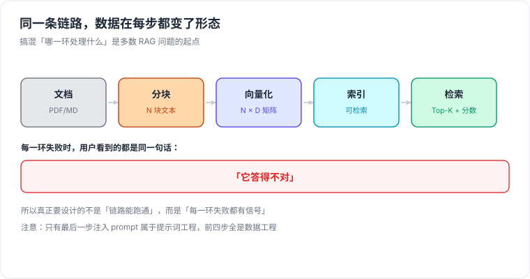
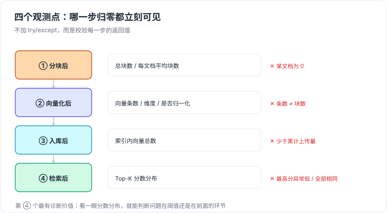
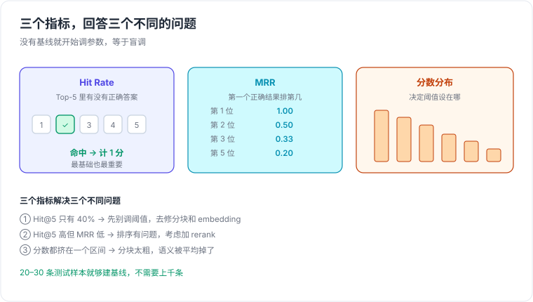

这是「写给工程师的机器学习入门」系列第 4 篇。 前三篇讲了向量、语义运算、相似度度量。这篇把它们拼成系统， 回答一个更实际的问题：怎么设计一个「出问题能被发现」的检索系统？
结论先说
RAG 不是一个功能，是五个可以各自失败的环节：
文档 → 分块 → 向量化 → 存储 → 检索 → 注入 prompt → 生成
① ② ③ ④ ⑤每一环的失败，用户看到的都是同一句话：「它答得不对」。
所以设计这类系统的重点不是「把链路跑通」，而是让每一环失败时都有信号。这篇讲三件事：链路的数据形态、四个观测点、三个质量指标。
一、先看清楚数据在每一环变成什么
大多数 RAG 出问题，是因为搞混了「哪一环处理的是什么东西」。

*图 1：同一条链路，数据从文本变成块、变成向量、变成 Top-K 片段，最后变成一段 prompt。*
| 环节 | 输入 | 输出 | 常见错误 |
|---|---|---|---|
| ① 分块 | PDF / Markdown / 网页 | 若干文本块 | 扫描件无文字层 → 0 块 |
| ② 向量化 | 文本块 | N × D 的向量矩阵 | embedding 端点未配置，静默返回空 |
| ③ 存储 | 向量 + 原文 + 元数据 | 可检索的索引 | 维度不匹配、换模型没重建 |
| ④ 检索 | 查询向量 | Top-K 片段 + 分数 | 阈值过高、度量选错 |
| ⑤ 注入 | Top-K 片段 | 一段带上下文的 prompt | 检索到了但没拼进去 |
关键认知：这五步里只有 ⑤ 是「提示词工程」，前四步全是数据工程。绝大多数检索质量问题出在前四步，但大家的注意力都在 ⑤。
二、三个真实的静默失败
「静默失败」指系统没报错、界面正常、但结果为空或错误。这三类我在实际项目里都遇到过。
1. embedding 端点没配，向量全是空的
# 看起来正常的调用
vectors = embeddings.embed_documents(chunks)
vectorstore.add_documents(chunks, vectors) # 没报错
# 检索时
results = vectorstore.similarity_search(query, k=5)
# → [] 什么都不返回，也没有异常表现：知识库能建、文档能传、进度条走完，检索永远返回空。
正确做法是启动时就检查：
try:
service._get_embeddings()
except EmbeddingNotConfiguredError:
raise RuntimeError("EMBEDDING_BASE_URL 未配置，知识库无法工作")宁可部署时挂掉，也不要上线三天后才发现知识库一直空着。
2. 分块数为 0，但上传状态是「成功」
chunks = splitter.split_documents(doc)
# doc 是扫描件 PDF，没有文字层 → chunks == []
vectorstore.add_documents(chunks) # 空列表，没报错表现：文档列表里有这个文件，但检索永远命不中它。
正确做法是上传后就校验：
if len(chunks) == 0:
raise ValueError(f"{doc.name}: 提取到 0 个分块，检查是否为扫描件")3. 检索到了，但没注入
context = "\n".join(d.page_content for d in results)
prompt = f"请回答用户问题：{query}" # context 定义了但没用上表现：模型说「资料中没有相关信息」，但你明明看到检索返回了 5 条。
这三类失败的共同点是：每一步都「成功」返回了，但返回值是空或无效。所以防御手段不是加 try/except，而是校验返回值。
三、四个观测点
设计可观测性时，问自己一个问题：如果这条链路出问题，我能在哪一步看出来？

*图 2：在每一环后面埋一个计数或分布，任何一步归零都能立刻定位。*
| 观测点 | 指标 | 异常信号 |
|---|---|---|
| ① 分块后 | 总块数 / 每文档平均块数 | 某文档为 0；平均块数远低于预期 |
| ② 向量化后 | 向量条数、维度、是否归一化 | 条数 ≠ 块数；维度不是预期值 |
| ③ 入库后 | 索引内向量总数 | 少于累计上传量（增量更新漏了） |
| ④ 检索后 | Top-K 分数分布 | 最高分异常低；全部相同；全部为 0 |
第 ④ 个最有用。很多「检索不准」的问题，看一眼分数分布就能定位：
results = vectorstore.similarity_search_with_score(query, k=10)
scores = [s for _, s in results]
print(f"top1={max(scores):.3f} median={sorted(scores)[len(scores)//2]:.3f}")top1 = 0.0或报错 → 前面的环节坏了top1正常但都被阈值滤掉 → 阈值问题top1 ≈ median→ 分数区分度差，可能分块太大
四、三个质量指标
有了观测点，还需要衡量「检索得对不对」。三个指标按重要性排序：

*图 3：命中率告诉你「有没有找到」，排序质量告诉你「排得对不对」，分布告诉你「阈值能不能用」。*
1. 命中率（Hit Rate）
构造一批「问题 → 应该命中的文档」样本，看 Top-K 里有多少真命中了：
hits = 0
for question, expected_doc_id in test_cases:
results = retrieve(question, k=5)
if any(r.doc_id == expected_doc_id for r in results):
hits += 1
print(f"Hit@5 = {hits / len(test_cases):.1%}")这是最基础也最重要的指标。如果 Hit@5 只有 40%，后面调什么都白费。
20–30 条测试样本就能测出大概水平，不需要上千条。
2. 排序质量（MRR）
命中率只看「在不在前 5 个」，不看位置。MRR（Mean Reciprocal Rank）看第一个正确结果排在第几：
第 1 位 → 1.0
第 2 位 → 0.5
第 3 位 → 0.33
第 5 位 → 0.2对 RAG 尤其重要——LLM 的上下文窗口有限，排在第 5 位的片段很可能被忽略。
3. 分数分布
不是「指标」，但决定阈值怎么设。前面第 3 篇讲过：分数不是百分比，必须看分布。
# 收集 100 条查询的 top1 分数
top1_scores = [...]
# 看分布，找「相关」和「不相关」的分界五、一个最小自检脚本
把上面三件事合成一个脚本，放在部署后跑一次：
def self_check(vectorstore, questions, expected):
"""返回四个数字：块数、向量数、Hit@5、分数中位数。"""
stats = vectorstore._collection.count()
print(f"索引内向量数: {stats}")
hits, scores = 0, []
for q, doc_id in zip(questions, expected):
results = vectorstore.similarity_search_with_score(q, k=5)
if not results:
print(f" [空结果] {q}")
continue
scores.append(results[0][1])
if any(r.metadata.get("doc_id") == doc_id for r, _ in results):
hits += 1
n = len(questions)
print(f"Hit@5: {hits}/{n} = {hits/n:.1%}")
print(f"top1 分数中位数: {sorted(scores)[len(scores)//2]:.3f}")
return stats, hits / n跑一次就能知道系统是「能用」还是「看起来能用」。
六、三条设计原则
1. 每一环都要「响亮地失败」
返回值校验比异常捕获重要。空列表、零块数、维度不符——这些都是失败，要主动抛。
2. 先建指标，再调参数
没有 Hit@5 这个数字之前，调阈值、换模型、改分块大小都是盲调。先有基线，再谈优化。
3. 把「检索」和「生成」分开评
模型答错了，可能是检索给错了材料，也可能是材料对了但模型没用。混在一起评，永远不知道改哪边。
# 分开记
print("检索命中:", hit_rate) # 前四环的质量
print("答案准确:", answer_score) # ⑤ 的质量本篇小结
- RAG 是五个可独立失败的环节，只有最后一环是提示词工程
- 静默失败靠校验返回值发现，不靠 try/except
- 先有 Hit@5，再调参数——没有基线就没有优化方向
下一篇预告
《为什么「准确率 95%」可能毫无意义》
下一篇讲分类任务里的评估陷阱：类别不平衡时准确率会骗人，以及 precision / recall / F1 到底该怎么选。
---
关于作者
本文是「写给工程师的机器学习入门」系列第 4 篇。作者 PHclaw 在做 AgentFlow——一个自托管 AI Agent 平台，知识库检索默认走 chromadb，embedding 端点独立配置。
- 源码：https://github.com/PHclaw/agentflow
- 在线演示：http://159.75.21.251:3000
- 文档：https://phclaw.github.io/agentflow/
- 全部文章：https://phclaw.github.io/blog/
对 RAG 系统设计有想法，欢迎在 Discussions 里讨论。